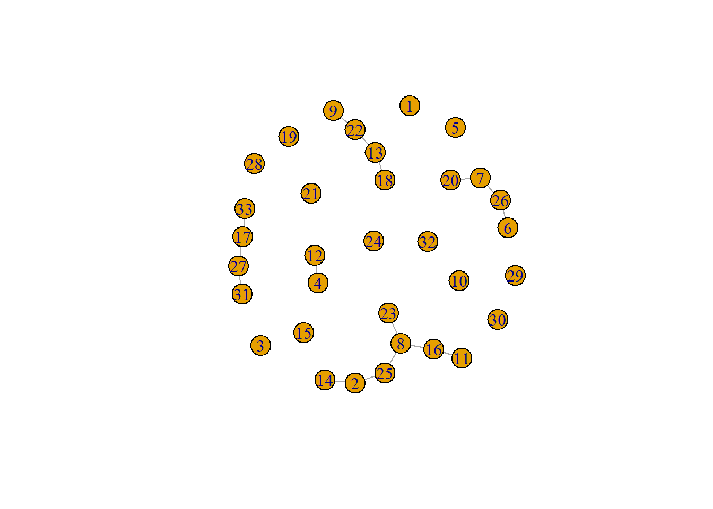

################################ merge two data setsquestionnaire_postCAM$ID <-NULLquestionnaire <-left_join(questionnaire_preCAM, questionnaire_postCAM, by="PROLIFIC_PID")dim(questionnaire)
[1] 193 41
2.2 set up CAM data
2.2.1 pre
Load CAM data
setwd("outputs")suppressMessages(read_file("CAMdata.txt") %>%# ... split it into lines ...str_split('\n') %>%first() %>%discard(function(x) x =='') %>%discard(function(x) x =='\r') %>%# ... filter empty rows ...discard(function(x) x =='')) -> dat_CAM_preraw_CAM <-list()for(i in1:length(dat_CAM_pre)){ raw_CAM[[i]] <- jsonlite::fromJSON(txt = dat_CAM_pre[[i]])}
Create CAM files, draw CAMs and compute network indicators
[1] "create_wordlist - use raw words"
[1] 0
[1] 6369
[1] "temporarily suffixes are added, because not all words have been summarized"
processing 193 CAMs...
[1] "== participantCAM in drawnCAM"
2.2.4 save CAMs as .json files, and as .png (igraph)
save_CAMs_as_pictures =TRUEif(save_CAMs_as_pictures){setwd("outputs")setwd("savedCAMs")setwd("png")### remove all files if there are anyif(length(list.files()) >=1){file.remove(list.files())cat('\n! all former .png files have been deleted')}### if no participant ID was provided replace by randomly generated CAM IDif(all(CAMfiles[[3]]$participantCAM.x =="noID")){ CAMfiles[[3]]$participantCAM.x <- CAMfiles[[3]]$CAM.x}### save as .json files, and as .png (igraph)ids_CAMs <-unique(CAMfiles[[3]]$participantCAM.x); length(ids_CAMs)for(i in1:length(ids_CAMs)){save_graphic(filename =paste0(ids_CAMs[i])) CAM_igraph <- CAMdrawn[[c(1:length(CAMdrawn))[names(CAMdrawn) ==paste0(unique(CAMfiles[[3]]$participantCAM.x)[i])]]]plot(CAM_igraph, edge.arrow.size = .7,layout=layout_nicely, vertex.frame.color="black", asp = .5, margin =-0.1,vertex.size =10, vertex.label.cex = .9)dev.off()}setwd("../json")### remove all files if there are anyif(length(list.files()) >=1){file.remove(list.files())cat('\n! all former .json files have been deleted')}for(i in1:length(raw_CAM)){if(!is_empty(raw_CAM[[i]]$nodes)){if(nrow(raw_CAM[[i]]$nodes) >5){write(toJSON(raw_CAM[[i]], encoding ="UTF-8"),paste0(raw_CAM[[i]]$idCAM, ".json")) } }}}
## answers of participantsDT::datatable(questionnaire[,c("PROLIFIC_PID", "multiplePositive", "multipleNegative")], options =list(pageLength =5))
any basal attributes missing?
Question: Fallen Ihnen weitere Eigenschaften ein, die Sie als relevant oder negativ für die Beschreibung neuer Materialsysteme erachten, die in der Liste nicht aufgeführt sind, so können Sie diese gerne in folgenden Textfeldern ergänzen:
## answers of participantsDT::datatable(questionnaire[,c("PROLIFIC_PID", "openQuestion_missedPositive", "openQuestion_missedNegative")], options =list(pageLength =5))
3.1.4 basal attributes: ethical most relevant
Question: Welche drei Begriffe sind aus Ihrer Sicht in moralischer Hinsicht am “relevantesten”?
## answers of participantsDT::datatable(questionnaire[,c("PROLIFIC_PID", "multipleEthic")], options =list(pageLength =5))
argument for choosen basal attributes
Question: Bitte begründen Sie kurz die Auswahl der ethisch relevanten Begriffe:
## answers of participantsDT::datatable(questionnaire[,c("PROLIFIC_PID", "openQuestion_Ethic")], options =list(pageLength =5))
3.1.5 outcome questions
Question: Sollte die Entwicklung innovativer Materialsysteme mit öffentlichen Mitteln gefördert werden?
table(questionnaire$outcome_research)
no unsure yes
4 32 156
Question: Sollten die Erforschung und Entwicklung solcher innovativer Materialsysteme verboten werden?
table(questionnaire$outcome_prohibition)
no unsure yes
182 7 3
Question: Wären Sie bereit, Produkte zu kaufen, die innovative Materialsysteme enthalten?
table(questionnaire$outcome_buy)
no unsure yes
2 85 105
if yes to previous question
Question: An welche möglichen Produkte haben Sie gedacht?
## answers of participantsDT::datatable(questionnaire[,c("PROLIFIC_PID", "outcome_buy_text")], options =list(pageLength =5))
3.2 co-variation of basal attributes
Compare the probability that two concepts are connected in randomly generated networks to drawn CAMs:
## get average number of drawn concepts (here fixed)numConcepts <-mean(networkIndicators$num_nodes_macro)## get average densitynumDensity <-mean(networkIndicators$density_macro)## simply get the average probability that two concepts are connected:g <- igraph::random.graph.game(n = numConcepts, p.or.m = numDensity)plot(g)

are.connected(g, 1, 2)
[1] FALSE
#> whereby each edge to be drawn has the identical probability in the Erdős–Rényi modelvec_booleanConnected <-c()# vec_booleanConnected2 <- c()for(i in1:10000){ g <- igraph::random.graph.game(n = numConcepts, p.or.m = numDensity) vec_booleanConnected[i] <-are.connected(g, 1, 2)# vec_booleanConnected2[i] <- are.connected(g, 22, 26)}baselineProbability <-mean(vec_booleanConnected)baselineProbability
[1] 0.0388
# mean(vec_booleanConnected2)
This baseline probability can be compared to all possible combinations of drawn concepts: